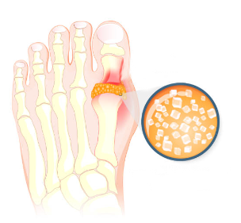
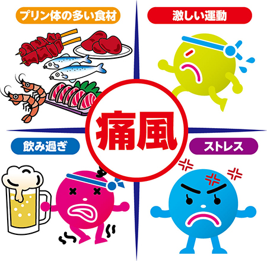

痛風・高尿酸血症
痛風・高尿酸血症とは
痛風は、高尿酸血症（血中の尿酸濃度が高い）が原因で、尿酸の結晶が関節に沈着し蓄積することにより、関節の周辺に強い痛みを伴う炎症発作が起きる病気のことです。
発症は中年期の男性に多く、閉経後の女性にも見られることもあります。
稀に若年者にも発症しますが、その際は比較的重症の場合が多いです。
発作がないと症状がないため、治療をされない方が多くいらっしゃいますが、高血圧、肥満、高中性脂肪、高コレステロール血症、尿路結石、心血管障害、脳血管障害、慢性腎臓病などの合併症を引き起こすことがあるので、しっかりと治療することが望ましいです。

症状
突然の足の親指の付け根や足首、足の甲、膝、手首、ひじなどの関節の腫れと激痛
発症しやすい部位
足の親指の付け根に症状が出ることが最も多く、痛みが起きるのは一度に一箇所のみで同時に複数箇所に現れることはありません。
原因
プリン体が多く含まれる肉やビールなどのアルコール類の過剰摂取や過剰生成、排泄不全によります。
暴飲暴食、肥満、激しい運動、ストレス、血縁者に痛風患者がいる、水分をあまり取らないなどが原因となります。

治療
血液検査により血中の尿酸値の値を調べ、5.0～7.0mg/dlを超えるようでしたら、食事療法や内服治療を行います。
逆に、この値より低いようなら内服量の減量、また内服を中止し食事療法への変更をします。
治療をしっかり行えば、決して治らない病気ではなく、定期健診のみとなる方も多いです。